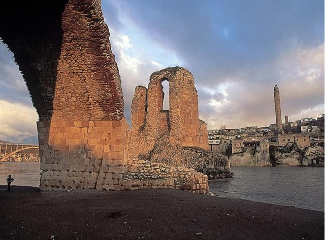
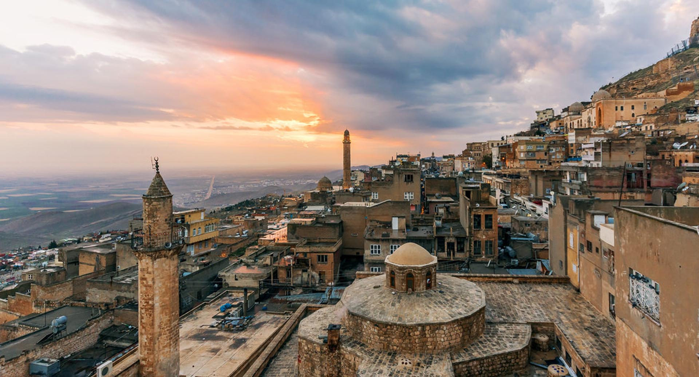
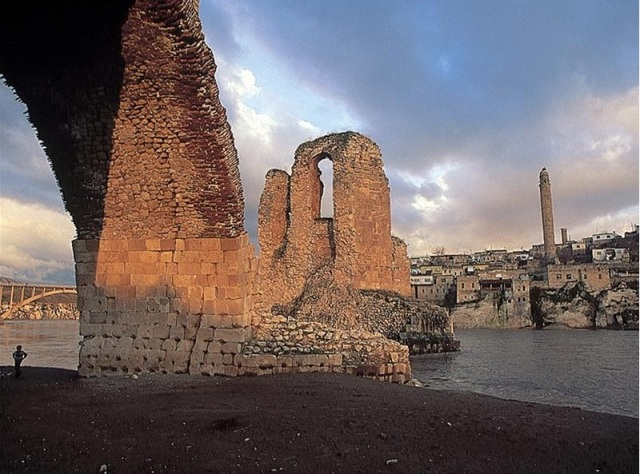
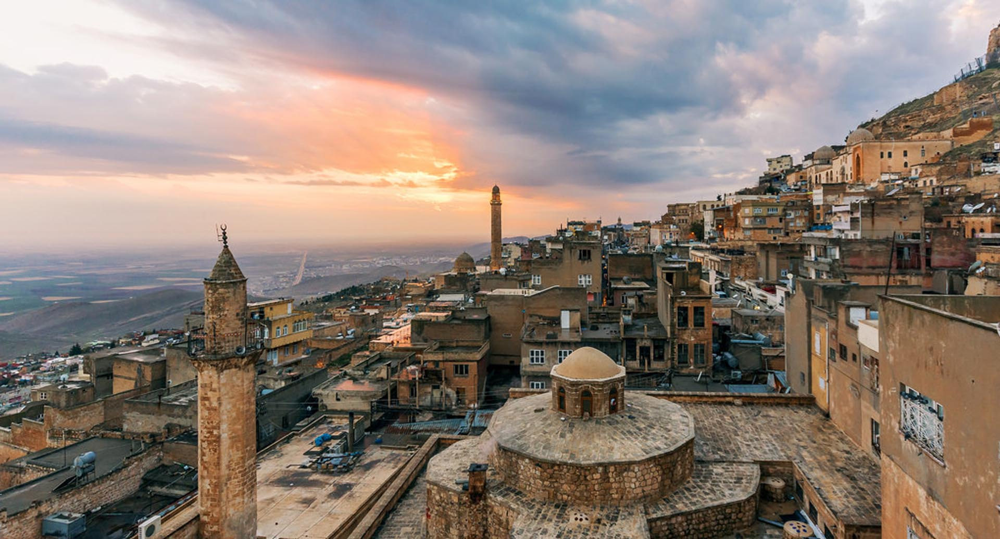

Mardin Hakkında
Mardin, Mezopotamya'nın kalbinde yer alan tarihi ve kültürel açıdan zengin bir şehirdir. Taş evleri, Dara Antik Kenti ve Midyat gibi önemli turistik alanlarıyla ünlüdür.
Mardin'de Ziyaret Edilmesi Gereken Başlıca Yerler:
- Deyrulzafaran Manastırı: Mardin'e bağlı tarihi bir manastır olup, hem dini hem de kültürel öneme sahiptir.
- Mardin Ulu Camii: Şehir merkezinde yer alan bu cami, Selçuklu mimarisinin güzel bir örneğidir.
- Zinciriye Medresesi: 14. yüzyıldan kalma bu medrese, Mardin'in tarihi yapıları arasında önemli bir yer tutar.
- Dara Antik Kenti: Mezopotamya'nın en önemli şehirlerinden biri olan Dara, tarihi kalıntılarıyla büyüleyicidir.
- Midyat: Geleneksel taş evleri ve dar sokaklarıyla ünlü tarihi bir ilçedir.